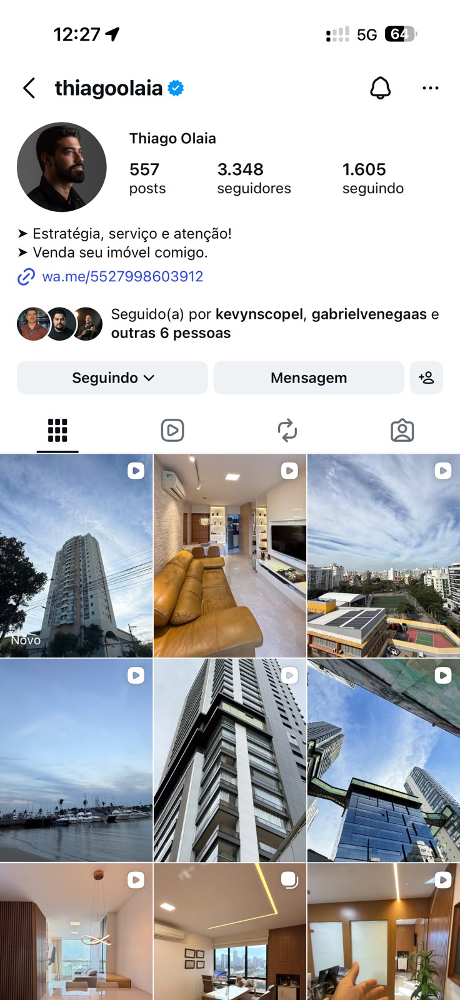

O seu voo.
Onde o diagnóstico entra na jornada da marca, do começo às gravações.
O que é este Diagnóstico?
Esse documento de diagnóstico serve como o mapa do ponto de partida da sua jornada. Antes de traçarmos a rota estratégica, precisamos saber exatamente onde sua marca está hoje: o que já comunica com clareza, o que já se sabe mas não aplica e o que ainda está sem definição, desde o posicionamento até a receita.
Tudo o que está aqui vem do que você nos contou no questionário, na entrevista e das pesquisas que realizamos do seu cenário. É o terreno onde o plano vai ser construído.
A essência do Thiago é um caso clássico de substância densa, codificação imatura. Quinze anos de food service, a construção de 16 casas e a virada para a corretagem, quedas reais (a venda da Disky Pizza que ele tratava como irmão, a loja de Laranjeiras que fechou, o prejuízo do primeiro projeto em Linhares), fé e família como sustentação, e seis sinais de credibilidade de peso, do 6º lugar no estado entre 250+ corretores à melhor pizzaria do estado duas vezes. Tudo isso vive na entrevista, porém quase nada vive no digital, principalmente no Instagram pessoal.
A versão pública atual é genérica, cerca de 60% do Instagram é anúncio de imóvel e a comunicação lidera pelo produto, não pelo propósito, porque os elementos que dariam tração estão recusados, privatizados ou em rascunho: prova escondida por pudor ("não coloco VGV, acho invasivo"), inimigo suavizado por medo de parecer crítico, histórias de queda nunca contadas em vídeo.
O Thiago tem um nível de consciência alto, o "Why" é classe A e raro para quem tem dois anos de profissão, mas falta definir com mais certeza o posicionamento e o movimento, dar nome às coisas e começar a transparecer isso no online.
Quem é o
Thiago Olaia
35 anos, casado, pai de um menino, católico. Quinze anos no food service à frente da Disky Pizza, o negócio da família (4 lojas, 200 funcionários), depois 16 casas construídas em Linhares. Desde 2024, corretor em Vitória: começou na Remax, hoje é autônomo. Não se vê como corretor pra sempre, se define como empreendedor e solucionador de problemas.
O que o move? Família, cuidado e verdade.
O que a trajetória do Thiago já oferece como narrativa.
Conquista: 15 anos de Disky Pizza (melhor pizzaria do estado 2x), 16 casas em Linhares, 6º no estado na Remax sem experiência.
Queda: a venda da pizzaria que ele tratava como irmão ("chorei quando vendeu"), a loja de Laranjeiras que fechou, o prejuízo do primeiro projeto.
Redenção: a virada com o sogro, "ele passou a me olhar como referência". A virada de chave: ele assinava os contratos das próprias casas e via o corretor levar 5%.
Desenhar a jornada de forma linear e transformar isso numa história de 60 segundos com emoção, em vez de currículo. Usar os frameworks de Epiphany Bridge e as duas Jornadas do Herói. A partir desse roteiro, criar um vídeo para cada história que fizer sentido.
Sinais
caros.
Sinalização de qualidade via exibições caras e difíceis de falsificar.
- Difícil falsificar
- Poucos já têm
- Gera alta autoridade
- Deve mostrar visualmente
- Difícil falsificar
- Poucos já têm
- Gera alta autoridade
- Deve mostrar visualmente
- Difícil falsificar
- Quase ninguém tem
- Gera autoridade média
- Deve mostrar como narrativa
- Difícil falsificar
- Muitos alegam, poucos provam
- Gera alta autoridade
- Deve mostrar comercialmente
São poucos sinais para o ticket. Sobram quatro provas de peso, e as mais fortes (o 6º lugar e a indicação) vêm dos dois anos de corretagem. Para imóveis de R$1 a 6 milhões, é um inventário curto: precisamos construir e ativar mais sinais de credibilidade ao longo do caminho.
Pequenas histórias de um personagem atraente.
Boas histórias, ainda sem forma. Melhores que a média. Servem pra montar um banco de histórias que viram vídeos pra ensinar o que ele quer que o cliente entenda. Falta dar forma contável e colocar no ar.
Vulnerabilidades.
Polaridade.
Como o personagem toma posição, sem neutralidade nem ofensas.
O posicionamento do Thiago é um caso de território certo e marca ainda não cristalizada. A matéria-prima é sólida e ele tem consciência dela: o avatar é nítido (o tradutor de mercado, não o vendedor de imóvel, anti-jargão, anti-urgência, anti-coach), o "como" e o "o quê" do Golden Circle estão claros, o papel de guia está assumido e o herói identificado, o indeciso. A diferenciação é biográfica, impossível de copiar, e rara pra quem tem dois anos de profissão.
O problema aparece onde a posição precisa virar marca. O "porquê" é classe A, mas vem depois do produto (cerca de 60% do Instagram é imóvel) e não tem frase única. A categoria não tem nome. O halo visual é "básico e não pensado", abaixo do ticket. A autoridade emprestável (APD, Remax, Pedro Sobral, Léo) está parada, e a jornada do herói nunca é contada em público.
O Thiago tem a posição certa e a consciência do território. Falta o trabalho de marca: cristalizar o "porquê" numa frase, nomear a categoria, ativar a autoridade emprestável e contar a jornada do herói em público. E há uma lacuna a investigar antes de cravar: o mapa do desejo do cliente está em branco, e sobra uma tensão por resolver, a marca prega acesso pra todos (anti-status), mas o ticket e os modelos que ele admira são puro status.
A identidade que o perfil projeta hoje: só fica mostrando imóveis, reporta os anúncios. Não produz conteúdo próprio nem assume posição.
Na sua essência tem todos os requisitos para o líder, o guia. Porém precisa percorrer um caminho para assumir esse posicionamento.
O porquê (a causa) vindo antes do o quê (o produto), de forma consistente e externa.
Bem definido, mas lidera a comunicação. A corretagem de alto padrão, de R$1 a 6 milhões. Hoje cerca de 60% do Instagram é imóvel.
Bem definido. Três pilares, cuidado com o cliente, democratização e confiança, contra o inimigo nomeado: "informação rasa, sem checagem, que não leva ninguém a nada".
O ponto mais forte, na ordem errada. A causa é classe A, "o que a XP fez com o mercado financeiro dá pra fazer com o imobiliário", mas fica enterrada sob os anúncios.
Halo narrativo e visual.
Ativos repetitivos que deixam a marca na memória.

O feed é só foto de imóvel: prédios, interiores e vistas. Sem rosto, sem história, sem padrão de capa, cor ou cenário. A bio vende o produto, "Venda seu imóvel comigo", não a causa.
Transferência de autoridade.
Pessoas e instituições transferindo autoridade para o personagem.
Hoje o Olaia não transfere nenhuma autoridade, nem de pessoas, nem de instituições. O cofre está cheio, mas a porta fechada.
Desejo mimético
Desejamos o que figuras aspiracionais desejam, o quanto o personagem gera desejo por imitação.
O cliente de alto padrão não compra pelos três pilares, nem pelo imóvel em si. Compra pelo que o endereço diz sobre ele: pertencimento e a vida que quer projetar.
O sábio gera desejo mostrando como pensa e traduz o mercado, opinião real, não imóvel nem oferta. Hoje o Olaia faz o oposto: lidera pelo anúncio.
O mapa do comprador está em branco: que vida ele quer projetar, quem admira, o que a compra sinaliza. E a tensão: a marca prega acesso pra todos, mas o ticket e os modelos que ele admira são puro status.
Jornada do herói.
O cliente é o herói, o Olaia é o guia. As duas jornadas que já existem como matéria de narrativa.
A transação visível: do imóvel certo à chave na mão. O indeciso que decide se mexer, vende e compra.
A transformação escondida: da vergonha, da falta de informação e da desconfiança da precificação até a confiança.
Conteúdo de sobra para as duas, com o caso do casal que "comprou antes de vender, acreditou que eu ia vender o deles" como prova. Mas hoje a presença dele está fraca no online, e a história nunca é contada em público, vira só anedota de bastidor. Falta construir as duas de forma concreta, com marcos e um script de narrativa, antes de virar conteúdo.
O Thiago é um caso clássico de marca que mostra só metade do personagem. No PMAI, ele tem Sábio como aliado #1, Guerreiro #2 e Governante #3: entender e ensinar, ter missão e enfrentar, assumir o comando e a responsabilidade. A matéria-prima é rara e abundante.
A marca, porém, mostra hoje só dois arquétipos: o Sábio como primário e o Cuidador como secundário, sendo que o Cuidador aparece só em quinto no teste. Congruente e simpática, mas incompleta. O Guerreiro (a missão, o inimigo, as quedas, o que ele protege) ficou de fora; o Governante (o comando, a autoridade, ser referência) ficou travado, por receio de se promover e medo de soar crítico.
A marca atual não está errada, está incompleta. O Sábio e o Cuidador são legítimos. Mas enquanto o Guerreiro e o Governante continuarem em rascunho, ela vai seguir soando como qualquer outro corretor sério de Vitória, sem a diferenciação que o teste mostra existir. Decidir quais arquétipos assumir, e deixar o Guerreiro e o Governante aparecerem com calma, é o movimento de maior alavancagem.
Arquétipos da personalidade.
Os arquétipos mais ativos na personalidade e na história de vida, do mais presente ao menos presente. Método PMAI.
Arquétipos da personalidade.
Os arquétipos mais ativos na personalidade e na história de vida. Método PMAI.
Os arquétipos de maior pontuação mostram o que move o Thiago por dentro, e quais enredos ele vive com mais facilidade e naturalidade.
No topo dele estão o Sábio, o Guerreiro e o Governante: entender e ensinar, ter missão e enfrentar, assumir o comando e a responsabilidade.
As descrições são gerais. Nem toda frase precisa ser totalmente verdadeira; o que importa é o padrão que se repete.
Os três aliados.
O que cada um dos arquétipos de maior pontuação carrega de força e de ponto cego.
A parte Sábio é um eterno aprendiz, especialista e educador natural, movido por curiosidade e vontade de entender as coisas.
Diante de problemas, investiga, explora o que já se sabe e procura a resposta. Na liderança, mantém a calma e pensa tudo da forma mais inteligente.
Ponto de atenção: ficar tão ocupado entendendo que esquece de viver, dar aula em vez de se relacionar, ou virar dogmático demais.
A parte Guerreiro é focada, orientada a metas, firme, assertiva e movida por missão. Nota ameaças, desafios e oportunidades de vencer uma disputa.
Diante de problemas, identifica a causa, quem está sendo prejudicado, e age para mudar, remover ou derrotar o que causa o dano.
Ponto de atenção: evitar dureza excessiva consigo ou com os outros, e a tendência de ver quem não acompanha como inferior.
A parte Governante assume o controle, organiza e age com responsabilidade para fazer as coisas funcionarem, usando bem os recursos.
Diante de problemas, cria regras ou estruturas novas para resolver e evitar dificuldades futuras. Gosta da sensação de domínio ao assumir o comando.
Ponto de atenção: evitar o "porque eu mandei". Liderar e orientar é eficaz; ser autocrático ou autoritário, não.
Como usar este relatório.
O resultado do PMAI é um ponto de partida, não um rótulo. As descrições são gerais, e nem toda frase precisa ser totalmente verdadeira: o que importa é o padrão que se repete.
Use os arquétipos para autoconhecimento, relacionamentos, carreira e desenvolvimento, e como base para decidir o que a marca vai assumir.
Explore seus aliados. Observe onde o Sábio, o Guerreiro e o Governante já geram força, energia e autenticidade no dia a dia.
Releia o ponto cego. O Criador (4º) pode indicar habilidades de imaginação, materialização e reinvenção que merecem atenção consciente.
Conecte com decisões. Use o ranking para refletir sobre liderança, escolhas profissionais, relacionamentos e momentos de transição.
Arquétipos de marca.
O que a marca do Thiago de fato mostra hoje, e como isso conversa com o teste de personalidade.
O perfil mostra hoje dois arquétipos: Sábio como primário e Realista como secundário. O Sábio tem congruência forte, é o #1 da personalidade dele, e aparece quando traduz o mercado. O Realista também é real (existe nele, em sexto): praticidade, "o que funciona", os fatos do imóvel.
O problema mora no Realista. Levado longe demais, praticidade pura vira catálogo, é o que faz o feed parecer commodity: prédio, planta e preço. E os dois deixam de fora os aliados mais fortes, Guerreiro (#2) e Governante (#3), a missão e a autoridade.
Pra ficar de olho: o Realista pode achatar a marca em só "fatos e imóveis", sem desejo nem posição; e o Sábio precisa ensinar com ponto de vista, pra não virar a "informação rasa" que ele mesmo nomeia como inimigo.
"Eu traduzo o mercado para ele." · Sábio
"Se é sol da tarde, eu falo que é sol da tarde." · Realista
Hoje o Thiago não tem um movimento. O que existe é matéria-prima forte e dispersa: cinco dos sete elementos do Primal Code em estado bruto (história de criação, credo, rituais, antivocabulário e líder), um inimigo nomeado e uma tese real. Mas sem Nome e sem Ícones, nada disso se propaga nem recruta. Um movimento só existe quando terceiros conseguem reconhecê-lo, repeti-lo e abraçá-lo, e isso ainda não acontece.
As ideias já aparecem na conversa, falta escolher e batizar uma: a democratização do mercado imobiliário (a "XP do imobiliário": leilão, cotas e fracionado, acesso pra quem só tem R$10 mil); a reabilitação do corretor ("corretor não é mal necessário"); a verdade contra o mercado raso ("informação sem checagem, que não leva ninguém a nada"); e o orgulho cívico de Vitória (os fios, as calçadas, a cidade).
O trabalho não é descobrir, é dar forma: definir a causa, batizar o movimento, ativar os ícones latentes (o "Olaia", Vitória) e destilar o credo num manifesto. Enquanto isso não acontece, a crença segue só na cabeça dele.
Os princípios que a marca defende, a declaração de propósito que une a comunidade.
O inimigo nomeado, a negação militante que funda a crença.
"Prefiro sangrar um pouquinho e manter o cliente."
"O que a XP fez com o mercado financeiro, dá pra fazer com o imobiliário."
Verdade que sustenta a relação além da venda.
Matéria-prima forte. Pelo Primal Code, um credo precisa de uma crença antagônica e unificadora, e ele já tem inimigo nomeado e visão de futuro: o corretor virar tão incontornável quanto o assessor virou pro gerente de banco. O que falta é forma: não está escrito como as "três frases" que um seguidor repetiria. E, como diz o resumo do movimento, sem forma escrita o credo não se propaga. Trabalho de redação, não de descoberta.
Os símbolos visuais e sensoriais reconhecíveis, o atalho que evoca a marca inteira.
Preto e branco, estilo clássico, mas sem intenção: "eu faço porque é o que tem. Não foi pensado, não."
O sobrenome como marca verbal: "eu sabia que ele tava fechado comigo".
Os fios, as calçadas, a cidade como cenário-assinatura.
O elemento mais fraco da seção. Pelo Primal Code, ícone é o atalho que evoca a marca inteira fora de contexto, e hoje não existe nenhum: o preto-e-branco é acidente, não escolha. Os candidatos ("Olaia", Vitória) são latentes e nunca foram testados. É um dos dois elementos que o resumo aponta como ausentes (Ícones e Nome) e que travam a propagação. Falta escolher um símbolo dono e testá-lo.
Os comportamentos repetidos que materializam a crença e criam pertencimento.
Impresso à mão mais experiências: "gosto de dar experiência, não só um bolinho pra comer em casa".
A quarta "inegociável", o compromisso fixo de aparecer e ensinar toda semana.
"Entrego o imóvel vendido e registrado no seu nome, todos os custos eu absorvo na minha comissão."
Recusa postar VGV e foto do cliente, o oposto consciente do corretor que se exibe.
O elemento mais forte da seção. Pelo Primal Code, rituais materializam a crença e criam pertencimento, e os dele batem com o credo: cuidado, entrega, perenidade. O delta é o menor de todos, faltam nome e embalagem. O kit não tem nome nem garantia anual; e o pós-venda, talvez o mais poderoso porque encarna "corretor agrega", não é vendido como promessa de marca.
O léxico que sinaliza pertencimento e, por contraste, as palavras que a tribo rejeita.
Indicação, perenidade e democratização completam o eixo-credo.
Ambivalente: "não sei se gosto da palavra, mas gosto da ideia".
"Eu chamo de ilusão."
"Qualquer imóvel é oportunidade, prefiro a realidade."
"Inclusive eu odeio."
Caso raro: o antivocabulário está mais desenvolvido que o vocabulário, o que pelo Primal Code é valioso, saber o que a tribo rejeita a define com nitidez. O ponto fraco é o lado sagrado: faltam termos autorais e próprios que sinalizem "universo Olaia". "Personalizado" é genérico e ele mesmo desconfia. Trabalho de curadoria e cunhagem, não de descoberta.
O protagonista que personifica a crença e em torno de quem a tribo se organiza.
"Referência no mercado imobiliário, e em negócios como um todo." Lastro: 6º entre 250+ na Remax, alto índice de indicação.
"Não coloco os vendidos, acho invasivo." A aversão a se promover; ainda se vê iniciante.
Pedro Sobral: "te vende te cativando". Autoridade que cativa, não que pressiona.
Eixo claro e lastreado. Pelo Primal Code, o líder personifica a crença com missão e certeza, e ele tem resultado pra isso. O freio é a tensão: o impulso de protagonismo colide com a aversão a se expor, o herói relutante. Um movimento precisa de um líder disposto a aparecer; falta dar permissão e resolver o pudor.
O sistema de crença completo que, quando nomeado, ganha vida própria e recruta adeptos.
Credo, inimigo nomeado, visão "XP do imobiliário", rituais e líder.
O conceito mais nomeável, contra "informação rasa, sem checagem, sem reputação".
"Eu vislumbro um branding, trazendo o meu nome atrelado."
Um substantivo que empacote a crença.
Substância madura, ato de nomeação ausente, o segundo elemento que o resumo aponta como faltante. Pelo Primal Code, é o nome que faz o sistema de crença ganhar vida própria e recrutar; sem ele, nada se propaga. O risco: um branding preso só ao "Olaia" vira marca de vendedor, não causa que outros abracem. Falta cunhar uma categoria ancorada em Olaia mais a tese de democratização.
O mercado do Thiago é um caso de estratégia quase completa na cabeça e quase nenhuma no ar. Ele tem, de forma rara, o mapa de concorrentes nos três planos, um inimigo afiado contra a corretagem rasa, uma tese de categoria nova (CLOP e democratização), oceanos azuis já validados e um statement de onliness pronto: "eu sou o único corretor que pensa o cliente e o mercado de maneira diferente". A concorrência regional e a leitura dos personagens são os pontos mais sólidos.
O problema transversal é o mesmo da essência: tudo está cru e não ativado. A diferenciação está autocensurada, a categoria não tem nome, os oceanos azuis foram abandonados por falta de operação e a disponibilidade mental carece de ativos repetidos. Some-se a lacuna real: os concorrentes-produto nunca foram mapeados. A fundação é forte; falta dar forma pública: nomear a categoria, publicar o inimigo como prática e reativar os oceanos azuis com braço operacional.
Quem disputa o mesmo público e a mesma promessa.
O que avaliar em cada um, e comparar com o Thiago. Olhar três eixos: o personagem que projetam, a promessa que fazem e a fundação por baixo (audiência, método, infraestrutura, anos de acúmulo). Serve para destilar o delta do Thiago: o que ele toma de empréstimo e o que rejeita. Ele os vê como modelo de trajetória, não como rival por cliente; o risco é imitar o formato sem ter a base, e ele mesmo recusa memes replicados e busca autoria.
Quem disputa o mesmo mercado na mesma praça, com foco em Bento Ferreira, "onde estou vendendo muito bem".
O que avaliar, e comparar com o Thiago. Aqui são os concorrentes diretos, mesma praça, mesmos imóveis: "todo mundo trabalha os mesmos apartamentos". O que avaliar em cada um é o mesmo, o personagem, a promessa e o serviço que entregam ao redor do imóvel. E é nesse último eixo que o Thiago se separa: "eles não fornecem de maneira alguma esse serviço". O movimento é atacar a prática (o venda-venda-venda), não a pessoa, e cravar isso na comunicação.
Em que prateleira a cabeça do cliente coloca a marca hoje.
A prateleira lotada do alto padrão de Vitória. O cliente vê mais um que quer vender pra ele.
Ou "consultor imobiliário": quem ajuda a comprar (e a investir), não quem empurra.
O cliente não gosta de quem fica vendendo pra ele; gosta de quem o ajuda a comprar. E o mercado tem muito pouco disso hoje: quase ninguém analisa o mercado de verdade, nem para quem quer morar, nem para quem quer investir. É um espaço quase vazio, e quem nomear essa prateleira primeiro a domina.
Que personagem o mercado projeta, e como o Thiago pode destoar.
A maioria dos corretores vive nesses dois arquétipos: a autoridade que comanda e o mago que promete transformação. Vivem vendendo transformação e oportunidade, no fundo "venda, venda, venda".
Como quem analisa o mercado em vez de empurrar, e quem cuida do cliente antes de vender pra ele. Cativa em vez de pressionar.
Campo limpo. Enquanto o mercado inteiro fala em transformação e oportunidade, o lugar do analista que cuida está vazio. Falta o Thiago cravar esse personagem e mantê-lo coerente, hoje ele vive na cabeça dele, não no perfil.
Onde há briga de preço e onde há espaço livre.
Toda a praça disputa os mesmos imóveis: briga de preço, briga de captação, "venda, venda, venda". É um Red Ocean gigante, e competir lá dentro é sangrar margem.
Sair de "mais um vendedor" para o analista do mercado, quem ajuda a comprar e a investir. Quase ninguém ocupa esse espaço em Vitória. O oceano azul nasce do posicionamento.
A criação do CLOP é outro Blue Ocean grande, um produto que ninguém oferece. Deve ser atacado com força assim que for lançado.
Dois oceanos azuis à vista. O mercado é vermelho de ponta a ponta; a saída não é competir melhor, é mudar de oceano. O posicionamento de analista abre o primeiro espaço livre agora; o CLOP abre o segundo no lançamento. A vantagem é de quem chega primeiro e sistematiza.
A substância da oferta é excepcional: um stack de serviço que absorve toda a fricção da transação (cartório, custos, visitas, objeções antecipadas), uma visão de nova categoria à la XP e um mecanismo único de verdade. Ele entende que valor não está só no resultado, mas em quanto da dor o cliente delega, e ele delega tudo. Isso é uma Grand Slam Offer na prática, só que entregue "de maneira muito arcaica".
O problema não está no produto, está na captura e no empacotamento: a oferta vale muito mais do que os 5% que ele cobra, a nova oportunidade ainda é visão, o mecanismo não tem nome e a prova social fica guardada por pudor. O movimento é produtizar o serviço ao indeciso, corrigir o preço ancorando no valor absorvido, ativar a escassez e a prova reais e destravar o funil para tirá-lo da dependência de uma única pessoa.
Como os concorrentes empacotam e vendem.
Repassa custo e fricção em vez de absorver: "o corretor costuma cobrar a certidão de ônus, manda um PIX, você paga 100 contos."
Terceiriza presença: manda outro fazer a visita, não declara objeção, despersonifica. "Colocaram uma IA, despersonificou demais."
Vende raso: "abordagem menos incisiva e mais rasa."
Ele descreve com precisão como o mercado empacota: repassa custo, terceiriza presença, vende raso. Esse contraste é o ouro da seção: mostra que o diferencial dele é estrutural, não de simpatia. Falta nomear a oferta como categoria à parte, em vez de "sou um corretor melhor".
Do gratuito ao mais caro, os degraus de oferta.
Degraus existem, escada não. Faltam preço, sequência e ascensão entre eles. Sobre a entrada, ele é direto: "não produtizei". Pior, os topos são três mercados distintos, o que dispersa foco. Precisamos consolidar o degrau de entrada pago que financia o resto.
O caminho do estranho até o cliente.
Converte, mas frágil. Um canal, uma pessoa, e o maior segmento desperdiçado: o indeciso é 80% dos leads e é atendido "de maneira muito arcaica". Precisamos diversificar canal, destravar o SDR com transição transparente e criar a nutrição do indeciso. Bom no topo, sem fundo escalável.
Os números que mostram o que funciona.
"O orçamento ano passado deu 50 mil reais que botei no tráfego." R$20/dia por imóvel, mix 60/40 morador/investidor. O que recusa rastrear é o VGV: "acho invasivo com o cliente".
Base confiável, fora do ar. Raro entre corretores por rastrear de verdade. Faltam os elos da cadeia: lead em reunião, reunião em proposta, proposta em venda, que fechariam o CAC e o ROI por etapa. Precisamos pegar o relatório de tráfego e cravar a cascata.
A metade alta da seção é forte: mapa de consciência quantificado e raro ("80% em descoberta"), quatro crenças falsas com epifania pronta pra cada uma, e um cliente ideal escolhido com cabeça estratégica, o indeciso com patrimônio, em vez do alto padrão supercompetido. Ele sabe quem atende, quem quer atender e quem rejeitar. O ICP é bom, mas vive na cabeça dele: a tradução do mercado sai "de graça e de maneira arcaica" e a democratização à la XP ainda não tem nome.
A fragilidade está em medir o que é dele e em cronometrar: o tamanho do mercado agora tem número (o alto padrão de Vitória é grande, caro e em alta), falta a fatia que ele captura e o mapa de gatilhos de vida, então a comunicação só captura demanda existente. Os próximos passos são objetivos: nomear o mecanismo de democratização, virar a segmentação por consciência numa régua de conteúdo, dimensionar o mercado com os dados que o próprio Thiago tem, e reconstruir a linha do tempo de transações reais pra mapear quando e por que o cliente, sobretudo o indeciso, decide se mexer.
O quanto o mercado já ouviu promessas parecidas.
"O que a XP fez com o mercado financeiro, dá pra fazer com o imobiliário."
Democratizar um mercado "totalmente turvo": leilão, house flipping, cotas, SCP. Ele já recusa o claim gasto: "tem muita gente que qualquer imóvel é oportunidade, eu costumo sair dessa seara".
Recomendação. Ele lê a saturação certa (Blue Ocean), mas ainda compete dentro dela. A analogia da XP é o embrião de um mecanismo novo, só que "ainda não produtizei". Precisamos transformar a democratização à la XP num mecanismo de marca com nome próprio, senão a profundidade vira só "mais um corretor que estuda".
O quanto o cliente sabe do problema e da solução.
"Sabe que está perdidaça, sabe mais ou menos o orçamento, mas não sabe o produto que é melhor para ela."
"Extremamente objetivos." Já sabem o produto e o que querem fechar.
Têm "maleabilidade": abertos a serem guiados pela melhor opção.
"Eu traduzo o mercado para ele: seu apartamento vale tanto, se você vender, você vai conseguir isso aqui."
Recomendação. Mapa raro: pirâmide quantificada e correta, com implicação direta de copy (os 80% não respondem a anúncio de oferta, respondem a conteúdo que nomeia o desejo). O único ajuste é que ele entrega a tradução "de graça e de maneira muito arcaica". Precisamos virar essa segmentação numa régua de conteúdo que fale com os 80% em descoberta e capture valor.
As ideias falsas que travam a decisão.
O corretor é um "mal necessário". "A visão do corretor na cabeça do cliente é o meu maior inimigo."
"Imóvel sempre valoriza, é o investimento mais seguro." O cliente trata como certeza o que ele mesmo chama de ilusão.
"Investir em imóvel é só pra quem tem muito dinheiro." Bloqueia quem "só tem R$10 mil", o coração da democratização.
"Pra comprar ou vender bem, eu me viro sozinho." Anuncia no portal, vai ao plantão da construtora, acha que o corretor não muda o resultado.
Quem compra dele hoje.
"Os leads são maiorias femininos, 45 mais." No alto padrão, "é a esposa desse cara que vem falar".
"No segundo atendimento que a figura do homem aparece." O cliente de maior valor é o casal que "compraram sem antes vender o deles comigo, foi uma reação de confiança".
Recomendação. O alerta é estratégico: o cliente de maior receita (alto padrão) é o segmento mais disputado, o oceano mais vermelho. E há uma assimetria a explorar: a mulher 45+ abre a conversa, mas a decisão é do casal. Precisamos recortar a comunicação pra servir à abridora e ao decisor financeiro, não só ao primeiro clique.
Quem ele mais quer atender.
O segmento mais disputado, o oceano mais vermelho. Receita alta, mas todo mundo briga pelo mesmo cliente.
"Tem um patrimônio, não quer vender, mas quer conhecer o mercado, eu traduzo o mercado para ele." "Filão que pouca gente explora, depois ele lembra e indica."
Recomendação. Clareza acima da média: escolheu o segmento subatendido (indeciso) em vez do supercompetido, no espírito de Jobs to be Done, o job é "traduzir o mercado", não "fechar transação". E saber quem rejeitar é metade de um ICP maduro. Falta escala: hoje o ideal aparece em Bento Ferreira em pequena escala, como "utopia onde quero chegar". Precisamos virar o indeciso numa máquina de atração e conteúdo.
O tom de voz do Thiago é raro pelo motivo oposto ao da maioria: ele não precisa descobrir como fala, ele já descreveu seu eixo com precisão de briefing. Cativar pela verdade e pela competência, sussurro consultivo em vez de grito, educacional e autoral em vez de meme. Os eixos estão claros, o arquétipo Sábio combina com esse jeito de falar, e o lastro de vivência dá originalidade genuína quando ele se solta.
O gap não é de definição, é de coragem e de volume. Dois freios travam a execução: a autoridade fica subdimensionada na forma, porque ele se autocensura por medo de "ser conhecido como crítico" e enche a fala de mitigadores; e o sussurro fica sem cadência, porque publica menos do que gostaria. O ativo está pronto: falta liberar a aresta, podar o "eu acho" e ganhar frequência.
As características que definem como a marca fala. Caso raro: ele já enuncia o eixo com precisão de profissional.
"Ele te vende te cativando. Esse eu acho que é o tom de voz que eu teria." Referência explícita no Pedro Sobral.
"Tudo que eu falo sobre educação do mercado é maneiro." Ensinar primeiro, vender como consequência.
Pode aparecer, mas não sustenta a marca. Ele sabe o que excluir, e isso vale metade do trabalho.
Pressão e urgência forçada não cabem. O calor vem da verdade, não da agressividade.
Bem posicionado, falta formalizar. O tom está claro: alta competência sem perder o calor. O próximo passo é virar um guia curto de 1 página, 3 faça e 3 não faça, pra padronizar a voz quando ele delegar a edição.
O volume e a intensidade da comunicação. Onde o Thiago decide falar.
Urgência, pressão, volume alto. Fecha rápido, mas quebra a confiança de quem faz a maior compra da vida.
Senso de urgência pontual, sem perder o tom. Útil só no momento de fechamento.
Calma, consultivo, sem pressão. A calibragem certa pra comprador de imóvel de R$1 a 2 milhões.
"O senso de urgência é importante pra fechamento, só que se você vai muito nessa teca, sai do meu posicionamento, não conversa comigo."
"Eu gostaria de postar muito mais, mas não tenho conseguido."
Escolha certa, execução fraca. Gritar com esse cliente quebra confiança. O problema é que sussurro sem cadência vira silêncio: um post por semana se dissolve no feed. E ele suaviza teses fortes por medo de parecer crítico. O sussurro do Pedro Sobral pega porque é afiado; o do Thiago ainda hesita em afiar.
A identidade visual do Thiago é um caso de instinto certo sem sistema. O gosto está afinado com o personagem e com o público (formal, sóbrio, preto e branco, vestuário deliberado), a semiótica pessoal é fina e o capital de credibilidade é raro: 6º no estado entre 250 corretores e prêmios de pizzaria. Mas tudo é feito por reflexo, "não foi pensado, não", e a marca acaba invisível como ativo.
Faltam os três motores que viram marca: prova visual de credibilidade, um martelo visual proprietário e a repetição gestáltica. Os dois sinais prontos (o sobrenome "Olaia" e o emoji da cidade) podem ser a semente. O caminho não é mudar o gosto dele, é dar forma pública e repetir: converter o ranking em selo sóbrio, travar um símbolo dono e fixar poucas constantes autorais, sem cair no convencional que ele com razão evita.
As cores da marca e o que elas dizem.
A direção é por gosto: "gosto de preto, branco, cor clássica". Pro alto padrão a associação está certa. Mas o único teste, o fundo azul, foi morto por feeling: "fiz um formato que era um fundo azul, uma luz, mas não gostei tanto". Não há códigos, hierarquia nem critério além do gosto.
Recomendação. Preto e branco sozinhos não diferenciam, são a base de quase todo luxo. Definir 2 neutros mais 1 acento proprietário e reabrir o teste por métrica, não por feeling. O azul que ele abandonou é forte candidato de confiança.
Se a estética conversa com o público que ele quer.
Única dimensão visual deliberada: "uso um social no dia a dia, conforme o posicionamento mesmo: calça social, sapato e camisa social". O crachá do alto padrão.
O decisor "uns 40 e poucos"; quem chega primeiro é "a esposa desse cara", "os leads são maioria femininos, 45 mais". Ele se afasta do cliente rude: "fico muito distante".
Recomendação. No corpo ele está certíssimo: a roupa formal fala com o público que ele quer. O problema é o descompasso: ele parece alto padrão pessoalmente, mas a presença digital é avulsa. Levar essa coerência pra identidade gráfica e blindar o giro orgânico.